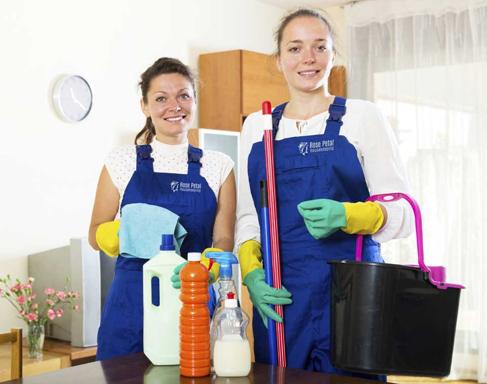
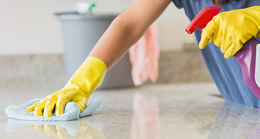
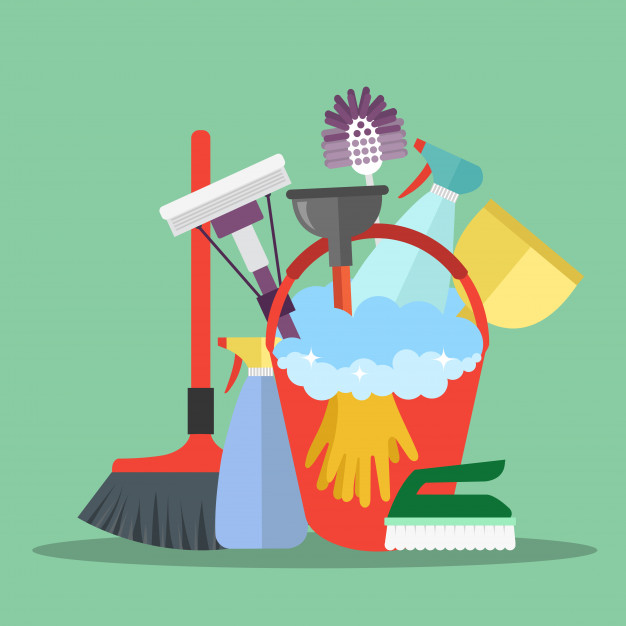

Cleaning is a dreaded responsibility. Many people don't have the time, patience, or skill to clean their house. Life gets in the way more times than people would like, so why not alleviate the burden? We provide residential cleaning to clients in the Nashua, NH area!
Looking for a cleaning service you can trust? Look no further! Our mission is to give clients an excellent experience and allow them to be pleased at how great their house looks!
It's important to note that every house has different needs and therefore a quote is needed to get the most accurate cost of our services. We always work in partnership with our clients.
The main services we offer are deep cleaning, biweekly, and monthly cleaning. Our services are satisfaction guaranteed. Our mission is to provide our clients with a clean and pleasant environment, so if anything is not to your liking we are willing to review the whole process. For this deep cleaning to be carried out we will need one day of work. We can schedule the best time to do so by text. For the initial cleaning service, we will provide all cleaning products. After this first cleaning, we will use your products. Our vacuum is certified for not scratching surfaces.
For general house detailing under our deep cleaning services, all corners of the walls will be dusted to remove spiderwebs. The walls and all the baseboards will be wiped down. The doors, including the glass doors and the windows inside your home will be cleaned and disinfected. Any lights and chandeliers will be cleaned. The floor will be vacummed and any hardwood or tile surface will be mopped. As for the kitchen, there will be a thorough cleaning for the outside of all cabinets, the oven, the stove, dishwasher and refrigerators, and the inside and outside of the microwave. Bathrooms include a complete cleaning of the sink, mirror, toliet, bath, and shower. For specific rooms such as the living and dining room, all furniture will be cleaned and the sofa will be vacummeed. Any bedroom will include cleaning of the furniture. If you remove the dirty bed linens and leave the clean sheets separate, we can go ahead and change that for you. All rooms will be thoroughly dusted.
For general house detailing under our biweekly and monthly cleaning service, the house will be mopped and dusted to remove spiderwebs. It also includes cleaning baseboards, the sides of windows, removing fingerprints off the doors and windows, vacuuming the sofa and the floor, mopping the floor, and wiping the cabinets on the outside. The furniture and the bathroom will receive a general cleaning. The outside of the refrigerator, outside of the oven and stove, and the inside and the outside of the microwave will be cleaned.
Looking to make a payment? We have options!
We accept payment through cash, check, and Venmo! You are more than welcome to use the form of payment that is easiest for you. We have no preference! For cash payments, please leave exact change in an envelope on the date of your cleaning in the location of your choosing. Please specify where you are leaving the envelope. Same goes for checks. Please make checks payable to either Luciana Moncao or Cristiane Figueiredo. Many of our clients utilize Venmo for quick and easy payments. If you would like to pay through card, please Venmo us for payment on the same day as your date of service. We will send requests through the app if payment is not received. Please scan the QR code below to easily access Venmo! If there are any issues with payment, please let us know. Thank you!
For references, please contact us!
We have a list of current clients that will be happy to let you know how pleased they are with our services. For each new client you refer, we will give you a bonus such as a discount on the cleaning fee or an extra cleaning service of your choice. Please ask them to note that they were referred by you so we can verify the referral and give you the bonus service! We need your help! Talk about our services with your neighborhood and co-workers!
How can I get a quote?
‣ We would need to visit your home in order to give you the best estimate on how much our services can cost. You can contact us (text is preferable) and we can arrange a time to stop by that works best for you.
How much do I have to pay for a quote?
‣ Quotes are free! Contact us to get a free quote today!
Will I have to provide my own products?
‣ For your first cleaning, we will provide the products as a courtesy. After that, we ask that you purchase products that will be solely used for your home.
What products will I need to buy after my first cleaning?
‣ Here is a list of products we recommend:
How can I make a payment?
‣ We accept cash, checks, and Venmo! Please see the payment tab to learn more.
What can I do to prepare for the cleaning?
‣ In bedrooms, we would really appreciate it if clothes and any toys are picked up from the floor. That way, we are able to easily access the floor for vaccumming and can avoid unnecessarily touching your personal items. Also, it would be great is there were no dirty dishes around the kitchen. If you have dogs, we would recommend temporarily putting them away for their safety.
What are your hours of operation?
‣ We typically work every weekday from 7am to 5pm. Appointments generally fall within this time. We do not work on major holidays such as New Year's Day, Easter, Thanksgiving, and Christmas.
How have you been operating during the pandemic?
‣ We do everything in our power to be safe when we provide cleaning services. We always use masks and regularly swap out our gloves to avoid the transmission of germs. It is up to clients whether or not they would like to wear masks in our presence. Of course, since it is their house, they may do whatever they please and we will respect their decision. We ask that if anyone in your house experiences COVID-19 symptoms to please notify us so we can postpone your appointment.
Looking for a free quote? Contact us!
Let us know you are interested and we can get back to you as soon as we can. Tell us your address and we can arrange a time to stop by and give you a free estimate on what deep cleaning, biweekly, and monthly services can cost! In order to get a free quote, please reach out through email! Email pleasantcleaningserv@gmail.com to learn more! To reach Luciana, text 603-417-9107. You can also text Cristiane's direct line at 603-973-4900. We look forward to hearing from you!
